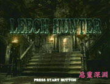
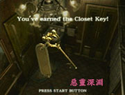
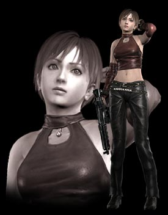
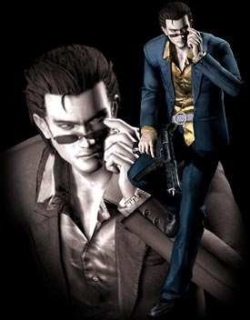

|
惡靈古堡０-----武器介紹
|
|
惡靈古堡０-----武器介紹
|
| 等級評定： 正式遊戲中除了Easy模式不做等級評定外，其他模式以遊戲時間作為評定標準，S和A級則另有獎勵。
|
|||||||||||||||||||||||||
| 水蛭獵人Leech Hunter：
 以任一模式破關一次即可讀取破關紀錄來進行附加遊戲，玩家同樣可以操控兩位主角，在Umbrella候補生養成所 和地底養成所中蒐集水蛭裝飾品，養成所內有分布敵人、道具和藍綠兩色水蛭獵人裝飾品各50個，藍色只有Billy 能拿，綠色是Rebecca能拿。一格道具欄可以放置10個水蛭裝飾品，遊戲方式大致與正式遊戲相同，遊戲結束的標 準是其中一位主角死亡或是由一樓大廳大門出去，其中只有從大門出去才會結算玩家拿到的裝飾品數目並給予獎 勵，獎勵共五種，將在正式遊戲中出現。
重點指導： 遊戲中要特別注意水蛭裝飾品一旦拿取就無法放置地上，而且兩位主角兩種顏色的水蛭裝飾品無法互通，所以如 果想要拿到大量的水蛭裝飾品，最好是先挑較弱的敵人來解決，以便先拿彈藥和恢復藥來解決更強的敵人，雖說 不一定要把所有的敵人清空，但是如果該房間有大量的裝飾品建議還是清空吧，等到後期再來拿水蛭裝飾品，以 免道具欄不夠的情況。 其實遊戲中的武器分配相當大方，所以如果碰到棘手的敵人，千萬不要硬碰硬，最好等強力武器到手再來。敵人 清除後不會再重新分配，但是當玩家蒐集了大部分的水蛭裝飾品，就會重新分配部份敵人，不要忘記帶支槍在身 上。 最後，由於只有從大廳大門出去才會評定成績，一定要量力而為，以免在無法存檔的情況下前功盡棄。 |
|||||||||||||||||||||||||
| 隱藏服裝：
 取得方法：選擇Normal或Hard模式破關，即可得到「服裝間的鑰匙」，遊戲時可至 大陸橫斷列車二樓101房換裝。 在"水蛭獵人"附加遊戲中，可以直接在遊戲開頭選單選擇換裝。 Rebecca有兩套新裝，分別是辣妹裝和民俗風，Billy只有一套像大哥的西裝。   |
這裡是惡靈古堡的專屬網站，建議您使用1024*768以上解析度、IE7.0以上瀏覽，本站為繁體中文Traditional Chinese Big5編碼
惡靈深淵Biohazard Abyss